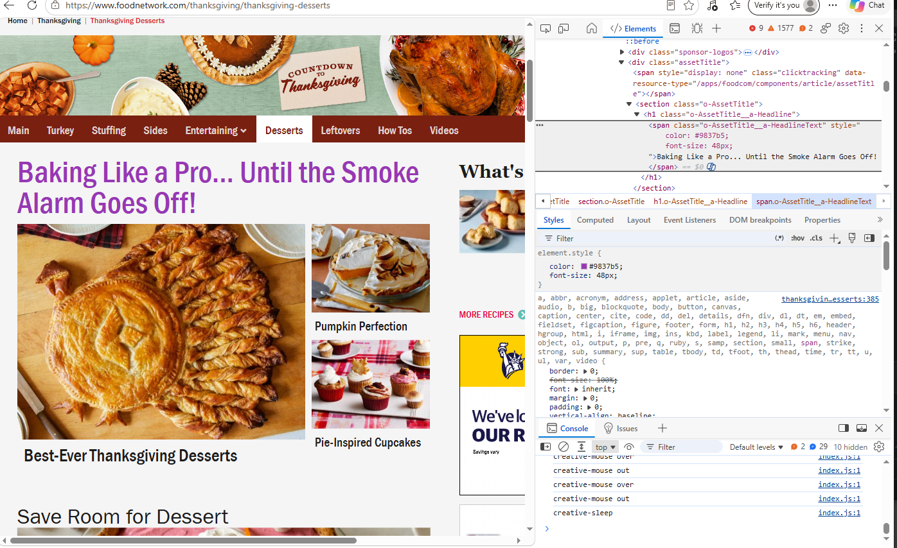

Food Network: My Baking Disaster Makeover
For this exercise, I chose the Food Network Thanksgiving Desserts webpage because I enjoy baking, especially during the holidays. I used browser developer tools to give the website a fun and creative makeover. My changes were temporary and only visible on my computer.

What I "Vandalized"
I used the browser's developer tools to make the following changes:
- I changed the Food Network headline to "Baking Like a Pro... Until the Smoke Alarm Goes Off!"
- I changed the headline color to purple (#9837b5).
- I increased the headline font size to 48px.
- I chose these changes because I love baking and wanted to add humor and personality to the holiday webpage.
- This exercise helped me understand how HTML controls webpage content and CSS controls its appearance.